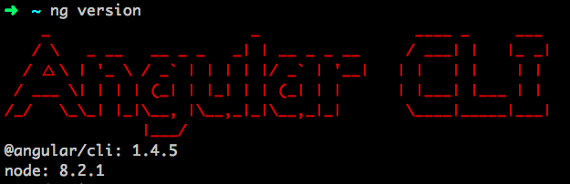
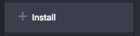
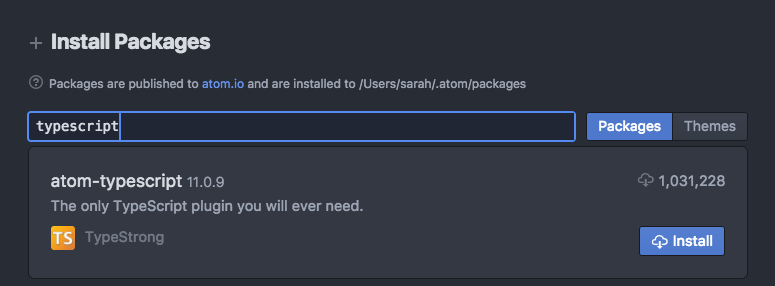

Prep Work
If this is your first time joining us for Coding & Cocktails, you'll want to install our tools before you go any further.
1. Click Here to Open Slack
If you have a tip that helped you with a step on the worksheet, you can easily share it with the group in Slack. Or if there are any issues with the worksheet [we make typos or there's an update to a tool that we didn't catch before the session], we may post updates in Slack. Plus, after class is over, Slack becomes a tool for you to gain access to mentors as you go through the homework, or any other questions that arise.
If you're using a Chromebook, skip down to the Cloud9 instructions at the bottom.
2. Install/Update Node.js & npm
If you joined us earlier this year, you might have installed Node.js & npm, but you'll still want to update to the latest version of Node.js & npm.
Open Git Bash or iTerm2
The "terminal" and "command line" (aka CLI, command line interface) are the same thing.
- On Windows, we use Git Bash
- On Mac, we use iTerm2
In your CLI, type:
node --versionDo you get a version number [Version 8 or greater required.]?
No version number [something like
node: command not found]. You need to install Node.Download the Current installer for Windows.
Double-click on the downloaded file & follow the installation prompts.
When that finishes, confirm
node --versionreturns a version 8 or greater.
If your version number is 8 or greater, proceed to Step 3.
If your version number is less than 8, you'll need to update Node.
Download the Current installer for Windows.
Double-click on the downloaded file & follow the installation prompts.
When that finishes, confirm
node --versionreturns a version 8 or greater.
Let's check your version of npm [which was installed with Node]. [Version 5 or greater required.]
In your CLI, type:npm --versionIf your version is 5 or greater, proceed to Step 3.
If your version is less than 5, update to the latest by typing:
npm install npm -g
3. Install angular-cli
In Git Bash (windows) or iTerm2 (macs), type:
npm install -g @angular/cliThis may take a minute or two to complete. Perfect excuse to grab yourself a drink!
To confirm Angular CLI was installed, while still in Git Bash or iTerm2, type:
ng version. If you get a version number, you can move on!
4: Add TypeScript Package to Atom
Using TypeScript with Angular2, provides us a lot of shortcuts. However, to make sure the correct words highlight for us in Atom (maybe you've noticed the colors in HTML, CSS or JavaScript files?), and that we get some of the autosuggest features of TypeScript, we have to install the TypeScript package for Atom.
Open Atom and from the Atom menu (mac) or File menu (windows) TODO: Windows vs Mac choose Preferences.
In the Preferences pane click on the Install option.

In the search bar, type Typescript
Find & select the TypeScript package that matches this image:

When prompted for any dependencies select Yes to install them.
Hover over the settings tab at the top of the page and an x should appear. Click the x to close the setup tab.
Setup is done! Give high fives to those around you.
Sign up for an account at c9.io
Note: It will ask you for credit card information, but you will not get charged for anything since we do not use features of Cloud9 that cost money. Ask a mentor for the Coding & Cocktails card for Cloud9.
Confirm your account from your email and log in to Cloud9.
Select Workspaces from the left side panel if you are not already there.
Choose Create a new workspace.
Add a name for your workspace - it can be anything you like. You do not need a description, but feel free to add one if you like.
Leave your workspace as Public.
In the template section leave it on the HTML5 option.
Click on the Create Workspace button.
Cloud9 will take a minute and create your workspace here.
When the workspace opens, click on the small x on the right side of the tab that says
[M]/README.mdto clear your workspace.On the left side project pane, right click on the hello-world.html file and choose Delete. Then confirm Yes you want to continue.
We need to update the version of Node.js that Cloud9 uses by default. We'll use a tool called Node Version Manager to use version 8. In the terminal section of your workspace (that's the bottom portion with the
~/worspace $prompt), type:nvm install 8
To make the terminal section bigger, hover over the top line of the terminal section with your mouse - it will change to an up-down arrow icon and then you can drag up which will also make the file editing area smaller.
If we leave Cloud9 and come back to this workspace, the version of Node.js resets, so let's change the default. In the terminal, type:
nvm alias default 8In the terminal, type:
npm install -g npm
This will ensure Cloud9 uses the most recent version of npm.In the terminal, type
mkdir CodingAndCocktailsto create your folder/directory that you'll be working in tonight. You'll notice a new folder show up on the left side of your screen.Any time the worksheet mentions to change directory to your home directory or type
cd ~you will want to typecd ~/workspaceinstead.Any time the worksheet references Atom, just know that your workspace is all inclusive and you'll just be working within Cloud9.